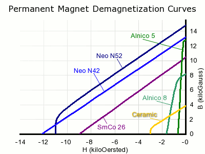
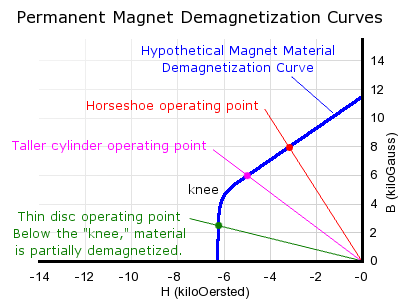

class: center, middle # Roketsan Training - Session II # Permanent Magnets and Types of PM Machines ## Ozan Keysan [keysan.me](http://keysan.me) Office: C-113 <span class="meta">•</span> Tel: 210 7586 --- # Permanent Magnets <img src="https://5.imimg.com/data5/BU/HO/MY-27609397/horseshoe-magnets-500x500.jpg" alt="Drawing" style="width: 400px;"/> ## Why do we use PMs? --- #Applications <img src="https://www.researchgate.net/publication/383260096/figure/fig1/AS:11431281278417367@1726635109758/The-application-of-permanent-magnets-in-different-sectors-mentioned-in-consumption.jpg" alt="Drawing" style="width: 800px;"/> --- # History <img src="http://www.magnetnrg.com/uploads/2/0/0/5/20054943/2633149.jpg" alt="Drawing" style="width: 750px;"/> --- # Magnetization Directions <img src="https://www.couragemagnet.com/uploads/allimg/20240510/1-240510153J3339.jpg" alt="Drawing" style="width: 650px;"/> --- #B-H Curve of a Magnet -- ### Desired Properties: -- ### Large Remanence flux density (retentivity, point that crosses B axis) -- ### Large [coercivity](http://hyperphysics.phy-astr.gsu.edu/hbase/solids/imgsol/coercivity.gif) (point that crosses H axis) --  --- # Magnet Strength Comparison  --- # Neodymium Magnets (NdFeB) ### Strongest and the most common (60% market share) ### Expensive ( $100/kg) ### Prone to corrosion (needs surface treating) <img src="https://www.arnoldmagnetics.com/wp-content/uploads/2017/10/Neo-Magnets.jpg" alt="Drawing" style="width: 400px;"/> [Levitating a man](http://www.youtube.com/watch?v=q9m-hHg0gFk), [Magnet smashing](https://youtu.be/Vt8NOdINJ1s?t=41s), [Crushing hand](http://www.youtube.com/watch?v=0t8yDnyOaQ8) --- # Samarium Cobalt Magnets (SmCo) <img src="https://tymagnets.com/wp-content/uploads/2024/09/couragemagnet.jpg" alt="Drawing" style="width: 700px;"/> ### Around 2/3 strength of NdFeB magnets ### Can withstand higher temperatures ### More resistant to corrosion --- # Ferrite (Ceramic) Magnets <img src="https://www.stanfordmagnets.com/wp-content/uploads/2020/11/Grades_of_Ferrite_Magnets.jpg" alt="Drawing" style="width: 500px;"/> ### Lowest cost ### Magnet strength is quite low (Br: 0.2 - 0.4 T) ### No corrosion problem but brittle --- # AlNiCo Magnets <img src="https://www.stanfordmagnets.com/wp-content/uploads/2022/07/Manufacturing-Methods-of-Alnico-Magnets.jpg" alt="Drawing" style="width: 700px;"/> ### Can be manufactured by cast or sintering ### Best choice for high temperature applications (up to 500 C) ### Easier to demagnetize by external magnetic fields --- # Iron Chrome Cobalt (FeCrCo) Magnets <img src="https://www.hsmagnets.com/wp-content/uploads/2015/12/Iron-Chrome-Cobalt-Flat-magnets-FeCrCo.jpg" alt="Drawing" style="width: 300px;"/> ### Malleable and easy to machine ### Does not require corrosion coating ### Strong flux density (>0.8 T) but low coercivity (easy to demagnetize) --- ## Intrinsic vs Normal B-H Characteristics <img src="https://raw.githubusercontent.com/ozank/ozank.github.io/master/presentations/images/intrinsic.jpg" alt="Drawing" style="width: 360px;"/> ### We can only measure normal curve [More info about magnets](http://what-when-how.com/electric-motors/hard-magnetic-materials-permanent-magnets-electric-motors/), [Magnet Guide](http://www.allianceorg.com/pdfs/Magnet_Tutorial_v85_1.pdf), [Demagnetization](http://www.shinetsu-rare-earth-magnet.jp/e/design/) --- # Demagnetization of PMs  ### If external magnetic fields get below the knee point, PM will lose strength --- # Demagnetization of PMs ## Recoil Line ### Magnets will loose strength if the reverse magnetic field goes beyond the knee point. <img src="http://www.eeeguide.com/wp-content/uploads/2015/11/Application-of-Permanent-Magnet-Materials3.png" alt="Drawing" style="width: 600px;"/> --- # Magnets with Temperature ### Real Datasheet of Sm-Co (Samarium-Cobalt Magnet) <img src="https://www.hsmagnets.com/wp-content/uploads/2015/10/Sm2Co17-26.jpg" alt="Drawing" style="width: 600px;"/> ### Magnets become less stable with increasing temperature. --- # What is Magnetic Force? ### [Why magnets attract each other?](http://www.youtube.com/watch?v=uTcuDprmues) by Richard Feynman -- ### [Magnets and Special Relativity](https://www.youtube.com/watch?v=1TKSfAkWWN0) Reading Suggestion: [Eminim Şaka Yapıyorsunuz Bay Feynman](http://www.idefix.com/Kitap/Eminim-Saka-Yapiyorsunuz-Bay-Feynman-Merakli-Bir-Sahsiyetin-Maceralari/Richard-P-Feynman/Bilim/Populer-Bilim/urunno=0000000427673) <img src="https://cdn-images-1.medium.com/max/2000/1*4MnjkvCDAAJt7d0KrvFBOw.png" alt="Drawing" style="width: 600px;"/> --- # Magnetic Circuits with Magnets, Load Line ## Example [More info on load lines](https://ocw.mit.edu/courses/electrical-engineering-and-computer-science/6-061-introduction-to-electric-power-systems-spring-2011/readings/MIT6_061S11_ch11.pdf), --- # Magnetic Circuits with Magnets, Load Line <img src="./images/ee564/magnet_load_line.png" alt="Drawing" style="width: 600px;"/> [More info on load lines](https://ocw.mit.edu/courses/electrical-engineering-and-computer-science/6-061-introduction-to-electric-power-systems-spring-2011/readings/MIT6_061S11_ch11.pdf), --- # Magnetic Circuits with Magnets, Load Line ## Be aware of the temperature variation <img src="./images/ee564/magnet_load_line_temp.png" alt="Drawing" style="width: 600px;"/> # The magnet can lose some of its strength --- # Magnet Grades <img src="./images/ee564/magnet_grades.jpg" alt="Drawing" style="width: 600px;"/> --- # Magnet Grades ## Last letter defines the working temperature - ## No Letter: < 80 C -- - ## M: Medium, <100 C -- - ## H: High, <120 C -- - ## SH: Super High, <150 C --- # Magnet Coatings ### Beware NdFeB magnets are prone to corrosion and need to be coated -- <img src="./images/ee564/magnet_coatings.jpg" alt="Drawing" style="width: 800px;"/> --- # Modelling of Magnets ## Operation range of a magnet <img src="./images/ee564/magnet_dynamic_bh.png" alt="Drawing" style="width: 500px;"/> --- # Modelling of Magnets ## Equivalent Circuit (Flux Source) <img src="./images/ee564/magnet_equivalent_circuit.png" alt="Drawing" style="width: 700px;"/> --- # Modelling of Magnets ## Thevenin Equivalent Circuit (MMF Source) <img src="./images/ee564/magnet_equivalent2.png" alt="Drawing" style="width: 700px;"/> --- # Modelling of Magnets ## If the magnet is operating in linear region ### \\(B_m = B_r + \mu_R \mu_0 H_m \\) ### \\(H_m\\) is negative (third quadrant in BH graph) -- ### \\(\Phi = B_m A_m \\) -- \\(\ = B_r A_m + \mu_R \mu_0 A_m H_m \\) -- ### \\(\Phi = B_m A_m \\) -- \\(\ = \Phi_r + \dfrac{F_m}{R_m} \\) --- # Modelling of Magnets ### \\(\Phi = \Phi_r + \dfrac{F_m}{R_m} \\) -- ### A constant flux source with a reluctance in parallel (i.e Norton circuit) ### \\(R_m = \dfrac{l_m}{ \mu_0 \mu_r A_m} \\) ### \\(P_m = \dfrac{1}{R_m} \\): Permeance --- ## Thevenin Equivalent Circuit (MMF Source) <img src="./images/ee564/magnet_equivalent2.png" alt="Drawing" style="width: 400px;"/> ### Magnet can be considered as a coil (MMF source) with: ### \\(NI =\\) -- \\(\Phi_r R_m =\\) -- \\(B_r A_m \dfrac{l_m}{\mu_o \mu_r A_m} \\) -- \\(= \dfrac{B_r l_m}{\mu_o \mu_r} \\) --- # Group Exercise-#1 -- <img src="./images/ee564/magnet_c_core1.png" alt="Drawing" style="width: 500px;"/> ### Calculate the airgap flux density for: --- # Group Exercise-#2 -- <img src="./images/ee564/magnet_c_core.png" alt="Drawing" style="width: 650px;"/> ### Calculate the airgap flux density for: --- # General PM Machine Structure -- <img src="./images/ee564/smpm_magnet.png" alt="Drawing" style="width: 500px;"/> ### Surface Mount Permanent Magnet Machine --- # Magnetic Circuit Model <img src="./images/ee564/smpm_magnet_circuit.png" alt="Drawing" style="width: 500px;"/> ### SMPM magnetic circuit --- # Magnetic Circuit Model ## Ideal Airgap Flux Distribution <img src="./images/ee564/smpm_airgap_flux.png" alt="Drawing" style="width: 500px;"/> --- ### Let's see the induced voltage waveform for a full-pitch coil -- <img src="./images/ee564/smpm_full_pitch.png" alt="Drawing" style="width: 500px;"/> --- ### Flux and Induced Voltage in the Coil -- <img src="./images/ee564/smpm_full_pitch_voltage.png" alt="Drawing" style="width: 500px;"/> --- # PMSM vs BLDC -- ## PMSM: Permanent Magnet Synchronous Motor <img src="https://g-search2.alicdn.com/img/bao/uploaded/i4/i2/2645629644/TB1gSWSXBUSMeJjy1zdXXaR3FXa_!!0-item_pic.jpg" alt="Drawing" style="width: 300px;"/> --- # PMSM vs BLDC -- ## BLDC: Brushless DC Motor <img src="./images/ee564/bldc.jpg" alt="Drawing" style="width: 350px;"/> ### Usually preferred in low cost, high speed, small motors --- # PMSM -- ## Sinusoidal Back-EMF <img src="./images/ee564/pmsm_emf.png" alt="Drawing" style="width: 600px;"/> ### Sinusoidal back-emf, vector control, precise motion control --- # BLDC -- ## Trapezoidal Back-EMF <img src="./images/ee564/bldc_emf.png" alt="Drawing" style="width: 600px;"/> ### Driven by square wave pulses, small power/low cost applications --- # D-Q Axes Revisited -- ## SM-PMSM -- (Surface Mount Permanent Magnet Synchronous Machine) -- <img src="./images/ee564/smpm_Ld_Lq.png" alt="Drawing" style="width: 600px;"/> -- ## Ld = Lq for SMPM machines --- # D-Q Axes Revisited -- ## IPM -- (Interior Permanent Magnet Synchronous Machine) -- <img src="./images/ee564/ipm_Ld_Lq.png" alt="Drawing" style="width: 600px;"/> -- ## Lq > Ld for IPM machines (as \\(\mu_r \approx 1 \\) for PMs) --- ## IPM: (Interior Permanent Magnet) <img src="https://mpcomagnetics.com/wp-content/uploads/2023/09/IPM-vs-SPM-Electric-Motors-768x538.jpg" alt="Drawing" style="width: 800px;"/> --- ## Several Other Topologies <img src="https://about-motors.com/files/images/motor/pmsm/rotor_saliency.png" alt="Drawing" style="width: 800px;"/> --- ## You can download this presentation from: [keysan.me/presentations](http://keysan.me/presentations)